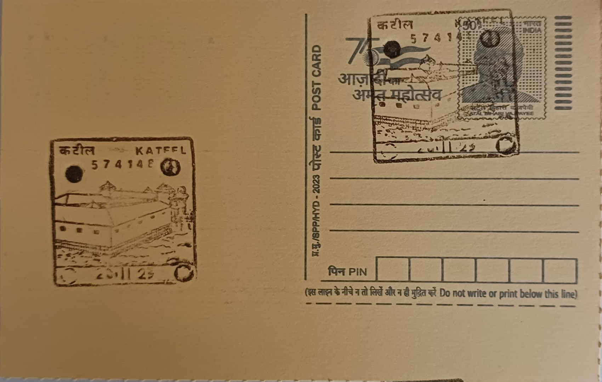

Sri Durga Parameshwari Temple
ಶ್ರೀ ದುರ್ಗಾ ಪರಮೇಶ್ವರಿ ದೇವಸ್ಥಾನ


Kateel, a small island formed by the river Nandini roughly thirty kilometres east of Mangaluru, takes its name and its sanctity from the goddess enshrined there as Sri Durga Parameshwari. Local tradition recounts that the demon Arunasura, having secured from Brahma a boon that no two-legged or four-legged being could kill him, terrorised the earth until the goddess descended to confront him; as he pursued her she transformed into a stone, and when he struck it a swarm of bees burst forth and stung him to death. A parallel legend credits the sage Jabali, the celestial cow Kamadhenu and her daughter Nandini with the river's origin and the goddess's manifestation on the island, giving the site its dual mythic foundation.
The temple ranks among the most visited Shakti shrines of coastal Karnataka's Tulu Nadu region, drawing pilgrims from across Dakshina Kannada and beyond for its presiding deity, worshipped here as an Udbhava Murti, an image believed to have arisen on its own rather than been consecrated by human hands. This self-manifest status places Kateel alongside a small group of similarly regarded Durga shrines in the district and underlines its standing as a primary centre of goddess worship, distinct from but complementary to the region's equally prominent Shiva and Vishnu temple traditions and its separate Bhuta Kola spirit-worship practices.
The shrine stands on the river island amid pillared halls carved with figural and floral sculpture typical of coastal Karnataka temple craftsmanship, with successive generations of patrons, including regional ruling families and local benefactors, adding to its structure over time even as its core sanctum retains the simplicity associated with a naturally occurring deity image. Because the temple's own landholding on the island is limited, devotees and donors have in recent years purchased adjoining land from private owners and transferred it to the temple trust, allowing gradual expansion of facilities for the large crowds that gather during major festivals.
The temple's defining event is the annual Brahmakalashotsava, a multi-day festival typically held in January or February that is among the most elaborate temple celebrations in the district, featuring ritual bathing of the deity, processions and large-scale community feeding that together draw hundreds of thousands of pilgrims to the small island over the festival period. The scale of this gathering has made logistics, including food service and transport, a recurring administrative challenge that the temple management addresses afresh each year.
Day-to-day administration rests with the Kateel Brahmakalashotsava Samithi, whose recent presidents have included sitting members of parliament from the Dakshina Kannada constituency, reflecting the temple's standing as both a religious and civic institution in the region. Infrastructure around the shrine has been upgraded with state support, including a sanctioned outlay of roughly twenty-five crore rupees for road-widening and connectivity works linking Kateel to nearby villages, alongside the construction of a modern kitchen to handle festival-time meal service. These ongoing works keep the temple functioning as a living pilgrimage site rather than a static monument, with its management, governance and infrastructure continuing to evolve around the demands of its annual festival calendar.
| Date of Introduction | September 20, 2000 |
|---|---|
| Address | Sub Postmaster, |
| Kateel SO, | |
| Dakshina Kannada (dt.), Karnataka - 574148. |